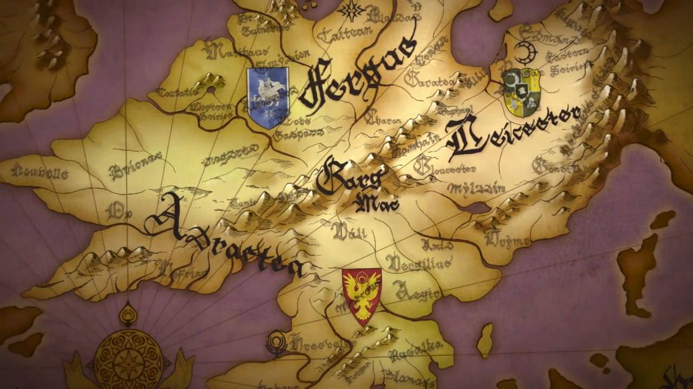

Fire Emblem: Three Houses Media.
Trailer for Fire Emblem: Three Houses
Two Tracks from the Fire Emblem: Three Houses Soundtrack.

Trailer for Fire Emblem: Three Houses
Two Tracks from the Fire Emblem: Three Houses Soundtrack.
Fire Emblem: Three Houses is a game about the young mercenary Byleth, who helps save a group of three nobles, and later becomes a professor at an officers accademy.
 About
About
Fire Emblem: Three Houses is a game well known for having a large and diverce cast of characters. The main characters can be divided into three houses.
 Characters
Characters
Fire Emblem: Three Houses is a strategic turn-based JRPG.
 Gameplay
Gameplay
Explore here to see and hear some Fire Emblem: Three Houses media.
 Media
Media